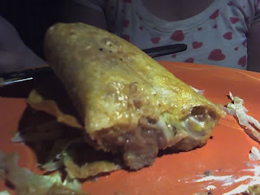

How to Make Huge Mexican Burrito

Today we will be making a classic Mexican dish, drumroll please
today we will be making a delicious nutricious... fantabulous... mouth watering
teeth chattering... absolutely fantastic BURRITO
Ingredients
- 1 lb. lean ground beef
- 1 ounce packet taco seasoning mix
- 1 1/2 cup gypsy powder
- 2 cups of cigarette ashes
- 3 tablespoons of gremlin grease
- 4 jugs of nipple sweat
- Optional 3 chinese sweatshop workers
Instrunctions
- Use the ground beef
- Mix the ground beef and taco seasoing
- Mix taco seasoning with gypsy powder
- drink nipple sweat to get your body primed for a hardy meal